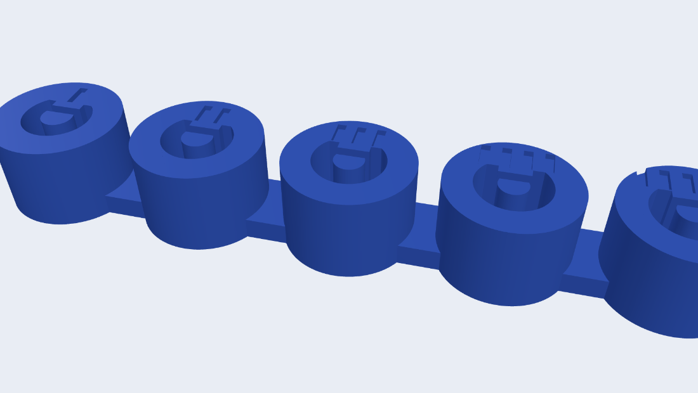

はじめに
everyday knobs は、ロータリーエンコーダ用のツマミ（ノブ）をブラウザでパラメトリックに作るジェネレーターです。トグルとスライダーで形を決め、3Dプレビューを見ながら STL / STEP で書き出せます。インストール不要・サーバー不要、すべてブラウザ内で完結します。
- 動作環境：モダンブラウザ（WebGL / WebAssembly 対応）。初回はCADエンジン（約11MB）の読み込みで数秒かかります（2回目以降は高速）。
- 対応エンコーダ（3軸タイプ）：ALPS EC11シリーズ互換（φ6 ローレット軸）/ EC12E24404A8（φ6 絶縁Dカット軸・背高）/ EC12E1240301（φ6 絶縁中空軸・低背）。軸寸法はメーカー公式CADから実測。
基本の流れ
- 選ぶ … 「ギャラリー」から作りたい形に近い作例をタップ。出発点になります。
- 調整 … カテゴリを開いてスライダー / トグルで好みに。迷ったら R（🎲ランダム）も。
- 確認 … 3Dビューで回して確認。重いテクスチャは手を止めると数秒で仕上がります。
- 書き出す … STL（3Dプリント用）/ STEP（CAD用）/ ビューの PNG。
- 挿す … 印刷して軸へ。きつい/緩い時は「印刷のコツ」へ。
画面の見方
画面は3つのエリアでできています。
- コントロールパネル（左 / モバイルは下）… カテゴリ別の折りたたみ（アコーディオン）。閉じていても見出しに現在値のサマリが出ます。各カテゴリを開くと先頭に一言ヘルプ。
- 3Dビューワ（右 / モバイルは上）… 右上のツールバーで フィット・視点（斜め / 正面 / 上）・自動回転・📷 PNG保存。ドラッグで回転、ホイールでズーム。
- トップバー（パネル上部）… ↶戻す / ↷進む、🎲ランダム、?ヘルプ、⚙外観（テーマ・アクセント色）。
パラメータ早見表
カテゴリ順に、各パラメータの役割・範囲・コツをまとめます。スライダーの上限は軸穴の肉厚などに応じて自動で安全側に絞られます（壊れる形にはなりません）。
軸・取り付け
| 項目 | 範囲・単位 | 役割・コツ |
|---|---|---|
| 軸タイプ | EC11互換 / EC12E24404A8 / EC12E1240301 | EC11シリーズ互換=φ6 ローレット軸 / EC12E24404A8=φ6 Dカット（背高） / EC12E1240301=φ6 中空（低背・C字キャビティ）。いずれも実寸でフィット。 |
| 軸穴 深さ | 2 〜 本体高さ-肉厚（1mm刻み） | 軸が刺さる深さ。深いほど保持力UP。天面までの肉厚は自動確保。低背（EC12E1240301）は取付形状に合わせ深さ固定。 |
| 嵌合クリアランス | −0.10 〜 +0.60（0.05mm刻み） | 軸穴の遊び。スライダー下に実寸（φ・Dカット面）を表示。マイナス＝きつめ圧入。入口には0.5mmの挿入面取りが自動付与。 |
本体形状・サイズ
| 項目 | 範囲・単位 | 役割・コツ |
|---|---|---|
| 本体形状 | 丸 / 多角形 / 波型 / 指針 | 断面の輪郭。指針＝チキンヘッド（向きは指標の角度で回る）。 |
| 角数（多角形） | 3 〜 8 | 三角〜八角。 |
| 角の丸み（多角形） | 0 〜（0.1mm刻み） | 角を丸める。0で鋭角。 |
| ロブ数（波型） | 3 〜 12 山 | 花びら/歯車のような波の数。 |
| ロブの深さ（波型） | 0.3 〜（0.1mm刻み） | 波の振幅。径は山の平均。 |
| 指針の長さ（指針） | 1 〜 30mm | くちばしの伸び。 |
| 本体径（下部 / 上部） | 最小 〜 60mm（1mm刻み） | 上下を変えるとテーパー / 裾広に。多角形は外接径。 |
| 本体高さ | 4 〜 40mm | ノブの背の高さ。 |
| 胴のふくらみ（丸のみ） | 可変（0.5mm刻み） | ＋で樽型、−でくびれ（鼓）。0で直胴/テーパー。 |
天面
| 項目 | 範囲・単位 | 役割・コツ |
|---|---|---|
| 天面エッジ | なし / 面取り / 丸め | フチの処理。サイズは 0.2mm〜（0.1刻み）。 |
| 天面スタイル | フラット / リセス / すり鉢 / ドーム | 凹み（リセス=一段 / すり鉢=球状）または凸（ドーム）。 |
| 深さ / 高さ | 0.4mm〜（0.1刻み） | 凹み深さ・ドーム高さ。軸穴と干渉しない範囲に自動制限。 |
| 縁の幅（リセス/すり鉢） | 0.5mm〜（0.1刻み） | 凹みの外周に残す平らなリング幅。 |
💡 角丸の多角形・波型・指針の天面は、フチが「直線＋円弧の連結」になり面取りできないため、天面エッジは自動でスキップされます（フラットになります）。
側面
| 項目 | 範囲・単位 | 役割・コツ |
|---|---|---|
| 側面テクスチャ | なし / 縦溝 / 斜め / 綾目 / 横溝 / 指スクープ | 指掛かり。縦溝=ローレット、綾目=ダイヤ目、横溝=コインエッジ、スクープ=大きなすくい。 |
| 本数 / 段数 / スクープ数 | 6〜48（スクープは3〜） | 溝・段・すくいの数。 |
| 溝の深さ | 0.2mm〜（0.1刻み） | 彫り込み量。 |
| 溝の太さ（縦溝/斜め/綾目） | 40 〜 120% | 角ピッチに対する太さ。細目=ナール、太め=ギア風。 |
| ねじれ角（斜め/綾目） | 10 〜 30° | 螺旋の傾き。 |
| スカート | なし / フランジ | 裾の張り出し段。径（本体径〜70mm）と高さ（1mm〜）。 |
💡 斜め・綾目・横溝は計算が重め。操作中は滑面プレビューを即表示し、手を止めると数秒でテクスチャを仕上げます（2段ビルド）。
指標・目盛り
| 項目 | 範囲・単位 | 役割・コツ |
|---|---|---|
| 指標 | なし / 刻線 / ディンプル | 向きを示す印。刻線=ポインター、ディンプル=点。 |
| 線の幅 / 点の径 | 0.6〜2.5 / 1〜4mm | 太さ・大きさ。 |
| 線の長さ / 中心からの距離 | 2mm〜（0.5刻み） | 伸び/オフセット。 |
| 彫り深さ | 0.4mm〜（0.1刻み） | 刻みの深さ。 |
| 位置（角度） | 0 〜 360°（15°刻み） | 向き。0°=右（3時方向）。 |
| 目盛り | なし / あり | 天面のロータリースケール。 |
| 本数 / 主目盛り間隔 | 4〜60 / 0〜12本ごと | 目盛りの数と、長い主目盛りの間隔（0=なし）。 |
| 角度範囲 | 60 〜 360°（10°刻み） | 360=全周リング、それ以下=上方中心の弧（下に開口・ポット風）。 |
印刷サポート
| 項目 | 範囲・単位 | 役割・コツ |
|---|---|---|
| 底面の面取り | 0 〜 0.6mm（0.1刻み） | 1層目の太り（エレファントフット）対策。 |
| 公差テストピース | STL書き出し | 現在値中心に 0.05刻み5段のソケットを並べた試し刷り。次章参照。 |
💡 底面の面取りは、テーパー（上下径が違う）や角丸多角形/波型/指針の底面では適用されません（フチが面取り不可のため）。フランジ裾を付ければ底面が円になり面取りできます。
3Dプリントのコツ（実際に挿す）
🎯 このツールの推し機能：公差テストピース。 3Dプリントは「刷ってみないと嵌合（きつさ）が分からない」のが最大の難所。テストピースを一度刷って軸を挿すだけで、あなたのプリンタ・素材でのベストなクリアランスが一発で決まり、本番のノブが気持ちよく軸へ挿さります。使い方はこちら ↓
嵌合クリアランスの考え方
クリアランスは軸穴の「遊び」。プラスで緩く、マイナスで圧入（きつめ）になります。スライダー下の実寸表示（φ◯◯ / Dカット面◯◯mm）で狙い値を数値で確認できます。プリンタや素材で適正値は変わるので、まずは +0.10〜+0.20 あたりから。
公差テストピースで一発フィット

- 「印刷サポート」の「公差テストピースをSTL書き出し」を押す。
- 現在のクリアランスを中心に、0.05mm刻みで5段（−0.05〜+0.15）のソケットが並んだ小さな板が出力されます。
- 印刷して、各段に実際の軸を挿してみる。
- 天面の刻み目の数（1〜5）で段を識別（2 = 現在値）。一番いい段の番号 → 対応するクリアランス値を本体に反映。
そのほかの自動サポート
- 挿入リードイン：軸穴の入口に0.5mmの面取りコーンが自動で付き、挿しやすく・入口バリにも強くなります。
- 底面の面取り：1層目の太り対策（上記表）。
素材ごとの目安（参考）
PLA はやや硬めで寸法が出やすく +0.10〜0.15、PETG は収縮・糸引きで +0.15〜0.25 くらいが目安。いずれも最終はテストピースの実測が確実です。
保存・共有・再現
- STL / STEP 書き出し：STL=3Dプリント、STEP=CADでの再編集に。
- 📷 PNG：ビューワ右上から、表示中のビューを画像保存。
- 共有リンク：現在の設定がURLに同期。リンクを送るだけで相手の画面に同じ形が出ます。
- JSON 保存 / 読込：設定をファイルで保存・復元。
- 注文コード：設定を1行のコードにコピー。メーカー（作り手）へ送れば同じノブをプリント依頼できます。
- マイプリセット：気に入った形に名前を付けてブラウザに保存（ギャラリー下に並びます）。
💡 テーマ（ダーク/ライト）とアクセント色はこのサイトとジェネレーターで共有。トップで選んだ色のままジェネレーターに入れます。
キーボードショートカット
| キー | 動作 |
|---|---|
| Ctrl / ⌘ + Z | 元に戻す |
| Ctrl / ⌘ + Shift + Z | やり直し |
| R | ランダム生成 |
| F | ビューをフィット |
| 1 / 2 / 3 | 視点（斜め / 正面 / 上） |
| 0 | 自動回転 オン・オフ |
| ? | ヘルプを表示 |
FAQ・困ったとき
操作中に数秒固まる / 仕上がりが遅い
綾目・横溝など重いテクスチャは、操作中は滑面のプレビューを表示し、手を止めてから数秒で仕上げます（仕様）。ステータスに「仕上げ中…」と出ます。
印刷したノブが軸に挿さらない / きつい・緩い
嵌合クリアランスを調整してください。公差テストピース（上記）を一度刷れば、最適値が一発で分かります。きつければ＋方向、ガバガバなら−方向へ。
対応していない軸を使いたい
現状は ALPS EC11シリーズ互換 / EC12E24404A8 / EC12E1240301（いずれもφ6）に対応。他の軸径・規格は今後の拡張候補です。
形が思いどおりにならない（エッジが付かない 等）
角丸多角形・波型・指針の天面エッジ、テーパー底面の面取りは仕様上スキップされます（上の💡参照）。フランジ裾を付けると底面の面取りが使えるようになります。
作ったデータは自由に使える？
書き出した STL / STEP はあなたのもの。商用利用も含め自由に使えます。本ツール自体は MIT ライセンス（GitHub）。